CSS Introduction
CSS:-
-
CSS stands for Cascading Style sheets.
-
It is a style sheet language which is used
to describe
the look and formatting of a document
written in markup language.
- We can create a single Css for multiple
Web-pages.
- In this tutorial, you will get details of
all CSS properties
such as background, border, font,
float, display, margin, opacity, padding,
text-align, vertical-align, position, color
etc.
-
Prerequisite
Before learning CSS, you must have the basic
knowledge of HTML
Features of CSS
- CSS reduces developer time and line of
code as
we can write a single CSS for multiple
pages.
- It is easy to manage and manipulate as
we need to change the code or
a single page only.
- You can completely change the look of
your website with only a few changes in
CSS code.
- It is easy to undersand by search
engine.
- With the help of CSS, we can make a
web-page dymanic on local system
without any internet connection.
How to Add CSS
CSS is added to HTML pages to format the document according to information in the style sheet.
There are three ways to insert CSS in HTML documents.
1. Inline CSS.
2. Internal CSS
3. External CSS
-
Inline Css:-
Inline stylesheet are used to applie on a single tag style attribute is used to specify css properties.
Inline css makes the document complex by mixing element and style together.
It is not recommended to use inline css in HTML document.
Example:-Let's take an example with a
Inline css.
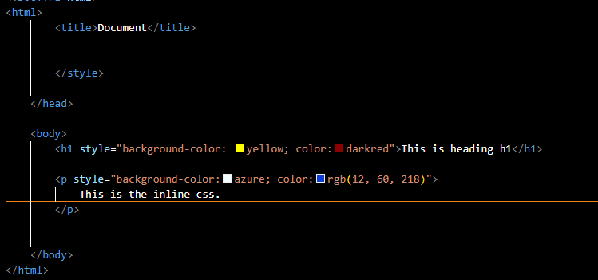
Output:-
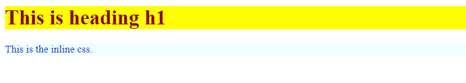
-
Internal Css:-
It is written inside the style tag within head section of html. An Internal stylesheet should be used when a single document has unique style.
It can affect all the elements of the page.
Example:-Let's take an example with Internal css
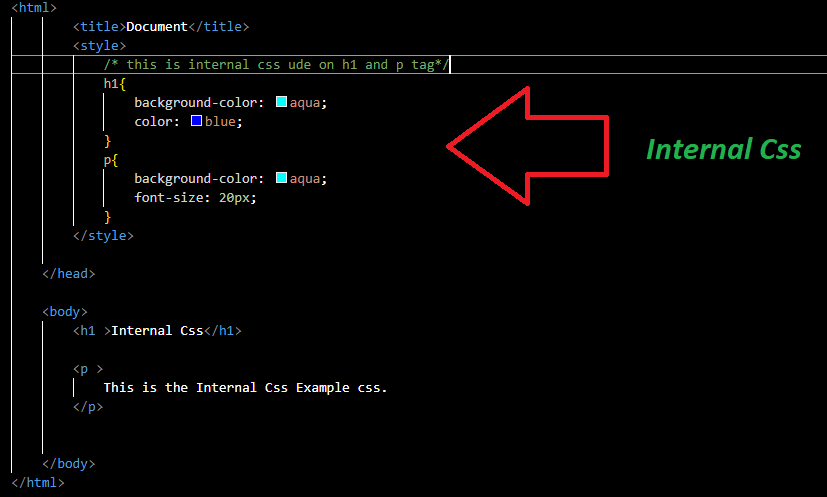
Output:-
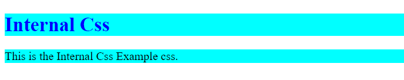
-
External Css:-
The external style sheet is generally used when you want to make changes on multiple pages.
It is ideal for this condition because it facilitates you to change the look of the entire web site by changing just one file.
It uses the <link> tag on every pages and the <link> tag should be put inside the head section.
The external style sheet may be written in any text editor but must be saved with a .css extension. This file should not contain HTML elements.
Example:-Let's take an example with External css
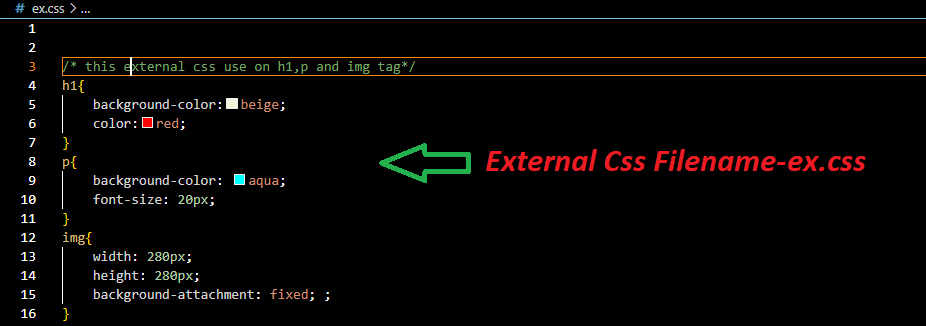
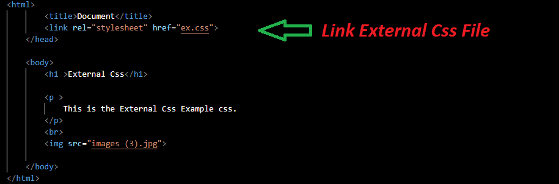
Output:-
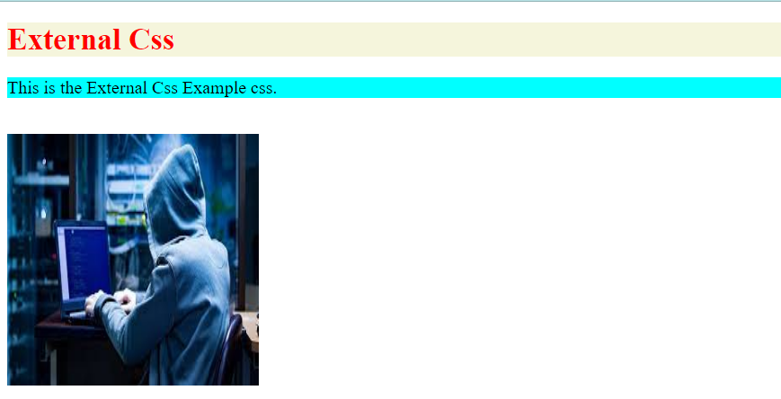
Rules of CSS
-
Every statements must have a selector and a
declaraion.
- More that one property should be separated by
(;) semicolon.
- Each property must have its value assigned using
(:) colon.
- The values in the list should be separated by
(,) comma and (_) space.
- We must not put space between value and its
unit.
like:- 2 px 3 % ; It is a wrong method.
like:- 2px 3px 4px; It is a right method.
Types Of Selector
There is five types of Selector in CSS.
1. CSS Element Selector.
2. CSS Id Selector.
3. CSS Class Selector.
4. CSS Universal Selector.
5. CSS Group Selector.
-
Element Selector:-
The element selector selects the HTML
element by
name.
Example:- < p > this is the
Element selector color:red and
text-align:center < /p >
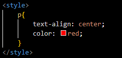
Output:-
-
Id Selector:-
The id selector selects the id attribute of
an HTML element to select a specific
element. An id is always
unique within the page so it is chosen
to select a single, unique element.
It is written with the hash character (#),
followed by the id of the element.
Example:- Let?s take an example with the id "para1".
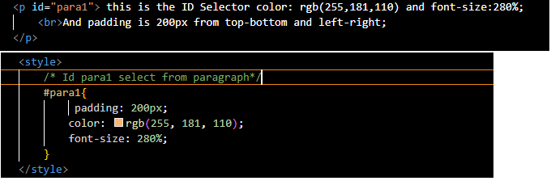
Output:-
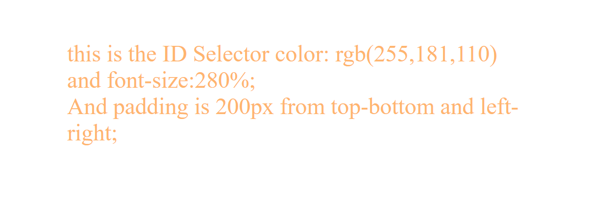
-
Class Selector
The class selector selects HTML elements
with a specific class attribute. Class
selector used on different elements.
We can assign same class to multiple
elements and multiple elements to same
class. .It is used with a period character .
(full stop symbol) followed by the class
name.
Note:- A class name should not be
started with a number.
Example:-Let's take an example with a
class "test".
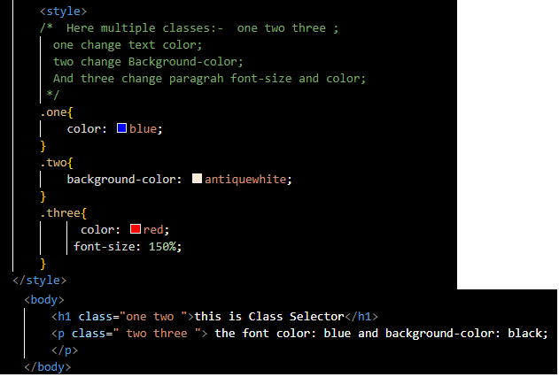
Output:-
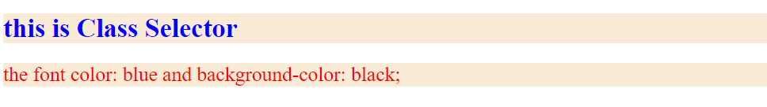
-
Universal Selector:-
The universal selector is used as a wildcard character. It selects all the elements on the pages.
Asterik (*)symbol is used to define universal Selector for css. This will rinder the content of every element
in our document.
Example:- Let?s take an example with the universal selector.
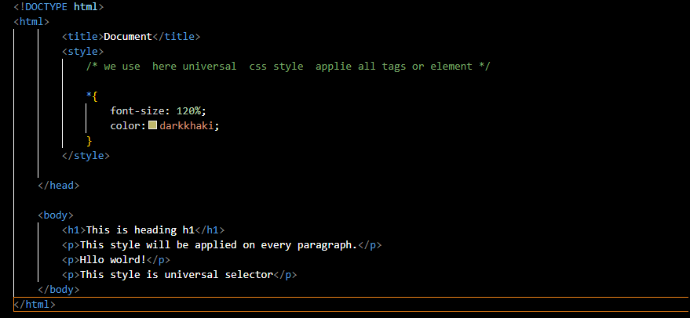
Output:-
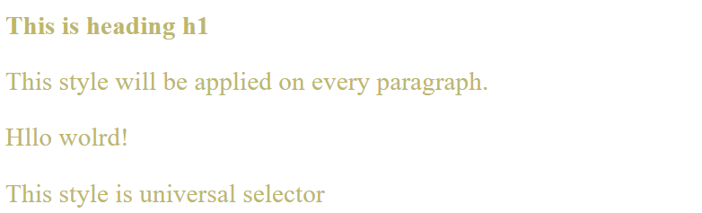
-
Group Selector:-
The grouping selector is used to select all the elements with the same style definitions.
Grouping selector is used to minimize the code. Commas are used to separate each selector in grouping.
Example:-Let's take an example with Group Selector h1,h2,p.
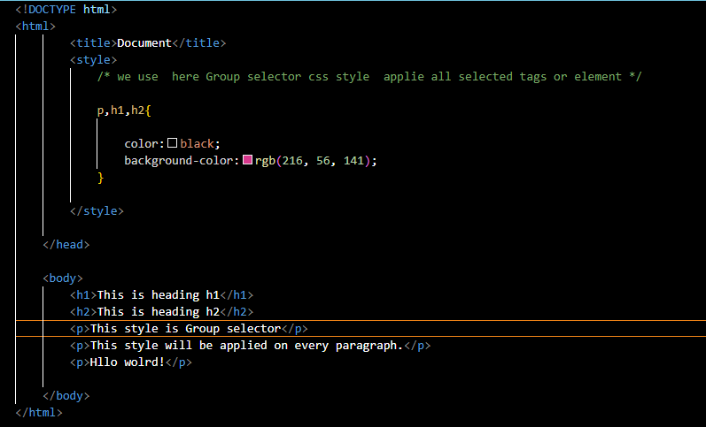
Output:-
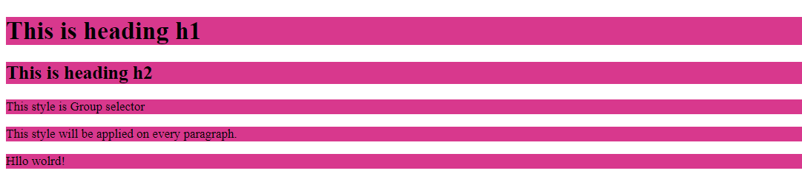
-
Attribute Selector:-
In the Css, we can use also a specific attribute for Css style
Example:-Let's take an example with input attribute selector
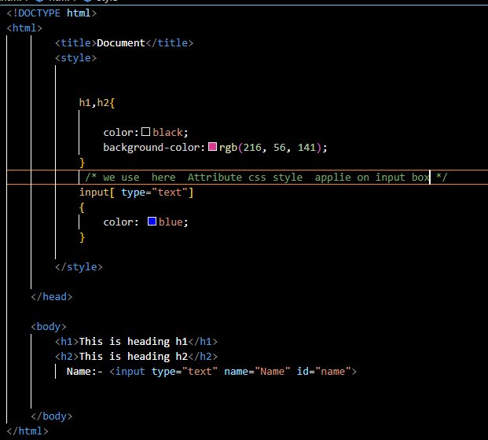
Output:-
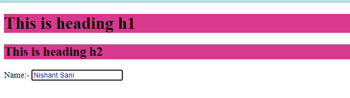
Image Handling using Css
The background image property specify an image to use as the background of an element.
By default the image repeated so it cover the entire element. A tbackground in body can be set as
<body>
{
background-image: url('give any source here ')
}
-
Css background-image repeat
By default, the background-image property repeats the background image horizontally and vertically. Some images are repeated only horizontally or vertically.
The background looks better if the image repeated horizontally only
we can use some other property like
-
background-repeat:repeat-x;
-
background-repeat:repeat-y;
-
background-repeat:no-repeat;
-
background-position
The background-position property is used to define the initial position of the background image.
By default, the background image is placed on the top-left of the webpage.
we can use some other property like
-
background-position: center;
-
background-position: top;
-
background-position: bottom;
-
background-position: left;
-
background-position: right;
we undersatand this a simple Example
Example:-Let's take an example with background-image.
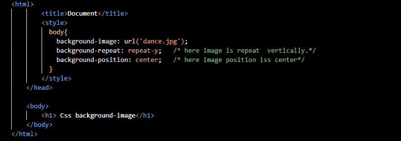
Output:-
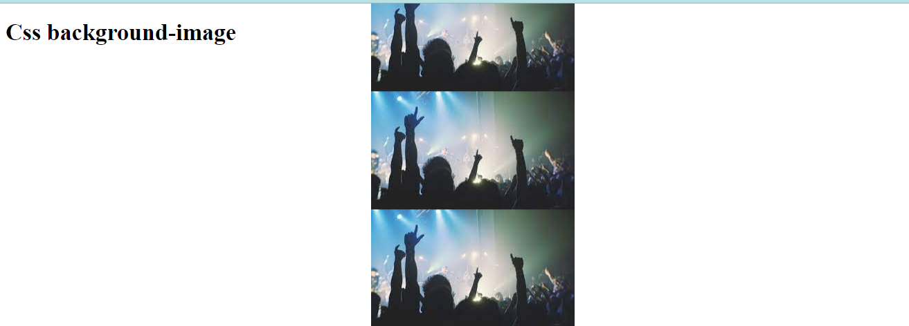
Color Management
The color property in CSS is used to set the color of HTML elements. Typically, this property is used to set the background color or the font color of an element.
In CSS, we use color values for specifying the color. We can also use this property for the border-color and other decorative effects.
Here color are specify by three types.
-
RGB Format:-
RGB format is the short form of 'RED GREEN and BLUE' that is used for defining the color of an HTML element simply by specifying the values of R, G, B that are in the range of 0 to 255.
The color values in this format are specified by using the rgb() property. This property allows three values that can either be in percentage or integer (range from 0 to 255).
-
Hexadecimal notation:-
Hexadecimal can be defined as a six-digit color representation. This notation starts with the # symbol followed by six characters ranges from 0 to F (mean 0-9 and A-F).
In hexadecimal notation, the first two digits represent the red (RR) color value, the next two digits represent the green (GG) color value, and the last two digits represent the blue (BB) color value.
-
By color Name:-
color can be set by using name of color.
Note:-All the browser donot support rgb value. 'hexa' value can be written in three digits.
It is converted into six-digit when rendering the code so it is recommended.
Example:-Let's take an example using different color property.
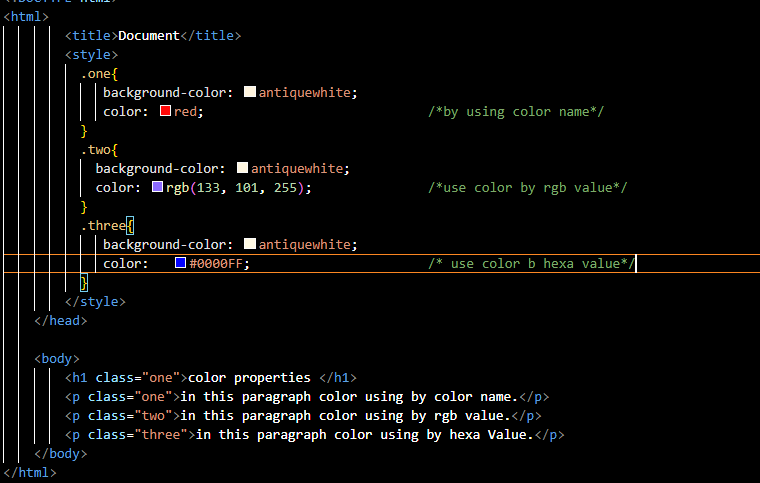
Output:-
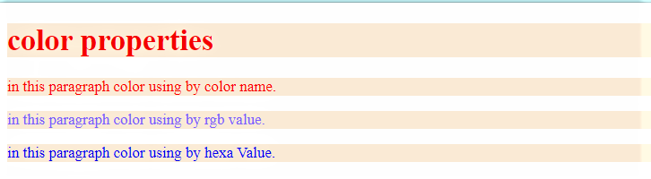
Text Management using Css
We can use the following Property to manipulate text ina a document.
-
text-color:-
color property is used to set the color of a text.
-
text-direction:-
This property is use to define direction ofa text there are two possible value for direction.
like: LTR or RTL.
-
letter-spacing:-
This property is use to manage space between the character.
-
word-spacing:-
This attribute is use to specify the space between word. the values can be normal or integer.
-
text-indent:-
This property is use to manage indent of paragraph.The possible valuea of indent can be (%) or integer
-
text-alignment:-
This property is use to align text in a documrnt.
alignment can be left, right,center, justify.
-
text-decoration:-
This property is use to decorate text.
like: underline,overline,blink,strikethrough etc.
-
text-case:-
This property is use to letter capitalize or convert lowercase, uppercase. possible values of this property
can be none, capitalize, uppercase, lowercase etc.
-
text-shadow:-
This property take integer value to set the shadow around the text.
Example:-Let's take an example for text-management.
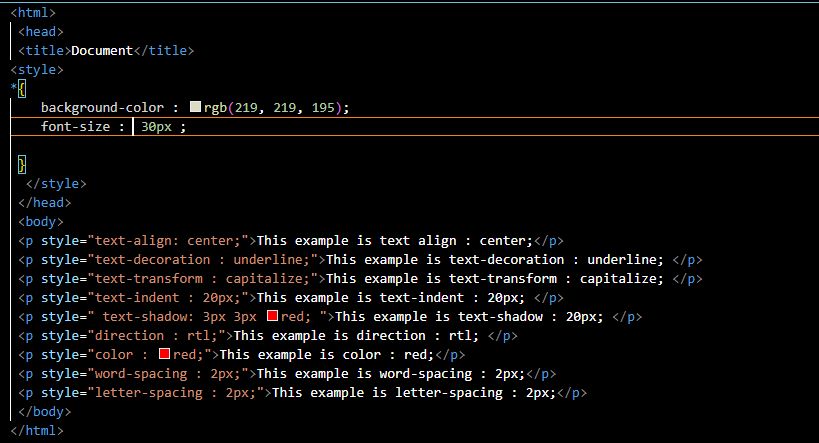
Output:-
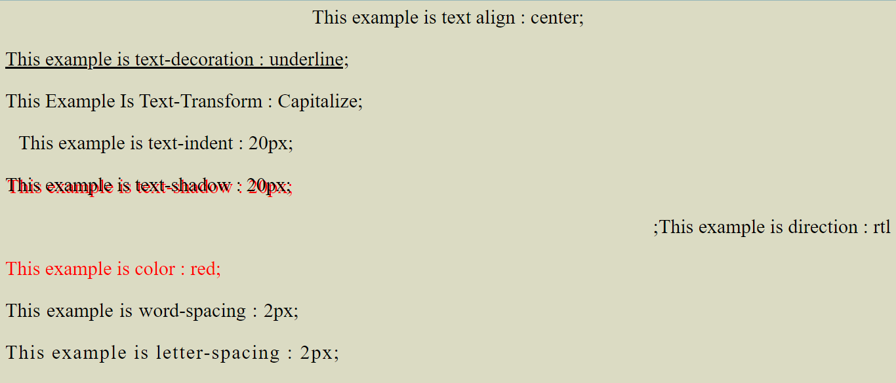
Font Management
A font is the combination of typeface, size and spacing with css property. we can define different font family with different size and decoration.
some of the properties are:-
- CSS Font family: This property is used to change the face of the font.
- CSS Font size: This property is used to increase or decrease the size of the font.
- CSS Font style: This property is used to make the font bold, italic or oblique.
- CSS Font variant: This property creates a small-caps effect.
- CSS Font weight: This property is used to increase or decrease the boldness and lightness of the font.
-
Font-Family:-
This property is used to change face of the font.
possible values can be any font available in the system. Multiple value can be seprated by comma(,).
-
Font-size:-
The font-size property is used to control the size of fonts.
Possible values could be xx-small, x-small, small, medium, large, x-large, xx-large, smaller, larger, size in pixels or in %.
-
Font-Style:-
This Property is used to change the font style.
It may be Italic ,oblique or normal.
-
Font-Variant:-
CSS font variant property specifies how to set font variant of an element. It may be normal and small-caps.
-
Font-Weight:-
CSS font weight property defines the weight of the font and specify that how bold a font is.
The possible values of font weight may be normal, bold, bolder, lighter or number (100, 200..... upto 900).
Example:-Let's take an example with font different property
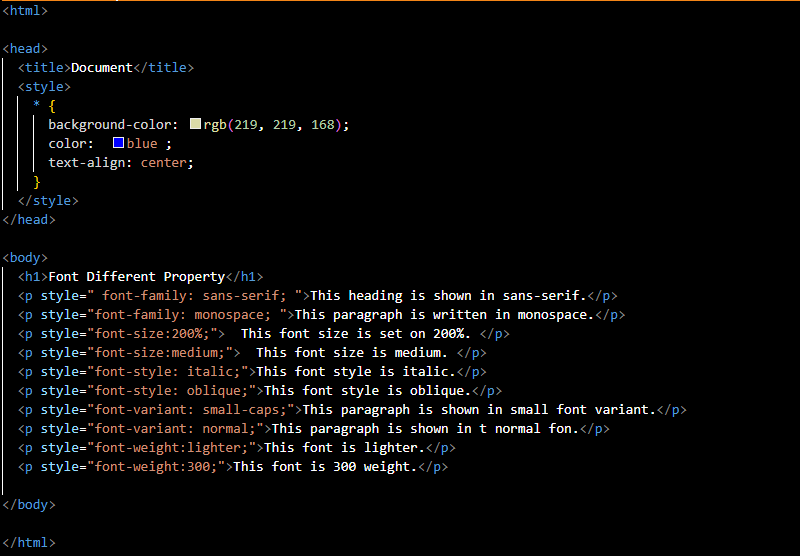
Output:-
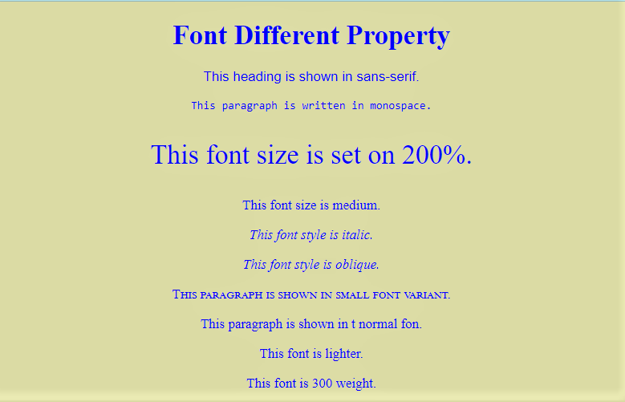
Managing Hyperlink using Css
A hyperlink is reference to data that can navigate to another web resources or documen. A hyperlink point to thee whole document of a section of document.
Hyperlink is a text that is linked, is called anchor tag <a> with the css.
we can set the following property.
-
link:-
This property specify unvisited hyperlink.
-
visited:-
This property specify all the visited hyperlink.
-
hover:-
It specify the element on which mouse pointer is pointing.
-
active:-
It specify the element on which user is clicking.
All the link should be written in section of the document to make the css property effective. These attribute
should be written in sequence link,visited ,hover,active.
Example:-
<style type="text/css">
a:link {color:red;}
a:visited{color:green;}
a:hover{color:blue;}
a:active{color:white;}
</style>
Example:-Let's take an example hyperlink with css property
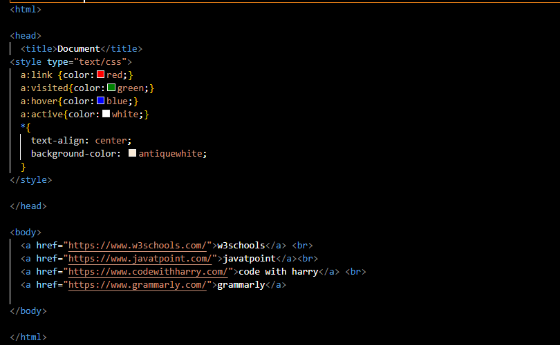
Output:-
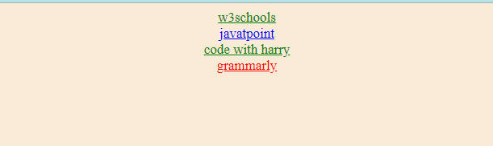
Managing list using css
With css we can manage appearance of list type,positionstyle etc.
There are two list style type.
-
Unorder List:-
This property allows to control yhe appearance of marker in the list.
In case of unorder list values can be none ,disc, circle and square etc.
Default value of unorder list disc.
-
Oreder List:-
For order list values can be decimal, decimal-leadind-zero, lower-alpha,
upper alpha, lower-roman, upper-roman.
Default value of order list is decimal.
Example:-Let's take an example list style using css.
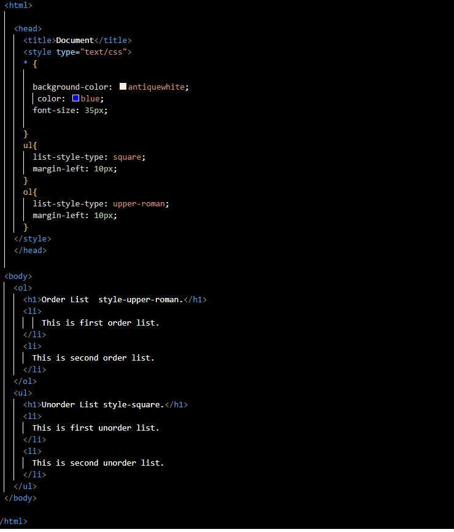
Output:-
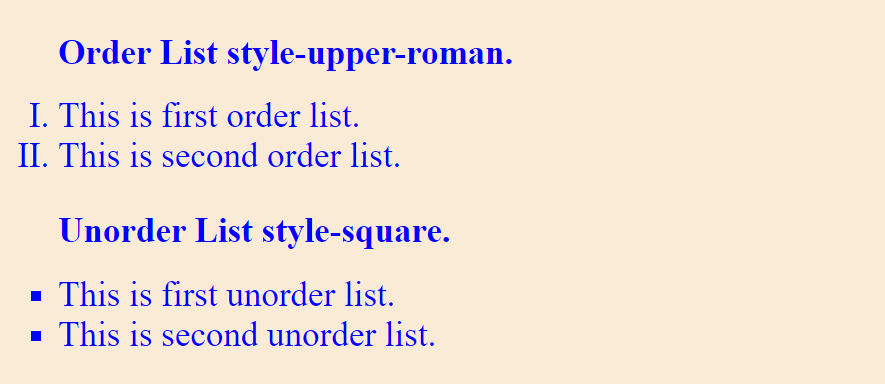
CSS Filter
CSS filters are used to set visual effects to text, images, and other aspects of a webpage.
The CSS filter property allows us to access the effects such as color or blur, shifting on the rendering of an element before the element gets displayed.
The syntax of CSS filter property is given below.
filter: none | invert() | drop-shadow() | brightness() | saturate() | blur() | hue-rotate() | contrast() | opacity() | grayscale() | sepia();
-
none
In this no filter effect in document.
-
invert()
It is used to invert the samples in the input image. Its 100% value represents completely inverted,
and 0% values leave the unchanged input. Negative values are not allowed in it.
-
drop-shadow()
It applies the drop-shadow effect to the input image.
The values it accepts are h-shadow, v-shadow, blur, spread, and color.
-
brightness()
As its name implies, it is used to set the brightness of an element. If the brightness is 0%, then it represents completely black,
whereas 100% brightness represents the original one. It can also accept values above 100% that provide brighter results.
-
saturate()
It sets the saturation of an element. The 0% saturation represents the completely unsaturated element, whereas the 100% saturation represents the original one.
The values greater than 100% are allowed that provides super-saturated results. We cannot use negative values with this property.
-
blur()
It is used to apply the blur effect to the element. If the blur value is not specified, then the value 0 is used as a default value.
The parameter in blur() property does not accept the percentage values. A larger value of it creates more blur.
-
hue-rotate()
It applies a hue-rotation on the input image. Its perimeter value defines the number of degrees around the color circle;
the image will be adjusted. Its default value is 0 degree, which represents the original image. Its maximum value is 360 degrees.
-
contrast()
It adjusts the contrast of the input. Its 0% value will create a completely black image, whereas the 100% values leave the unchanged input, i.e.,
represents the original one. Values greater than 100% are allowed that provides results with less contrast.
-
opacity()
It is used to apply transparency to the input image. Its 0% value indicates completely transparent,
whereas the 100% value represents the original image, i.e., fully opaque.
-
grayscale()
It converts the input image into black and white. 0% grayscale represents the original one,
whereas 100% represents completely grayscale. It converts the object colors into 256 shades of gray.
-
sepia()
It is used to transform the image into a sepia image.
0% value represents the original image, whereas the 100% value indicates the completely sepia.
Example:-Let's take an example Css filter
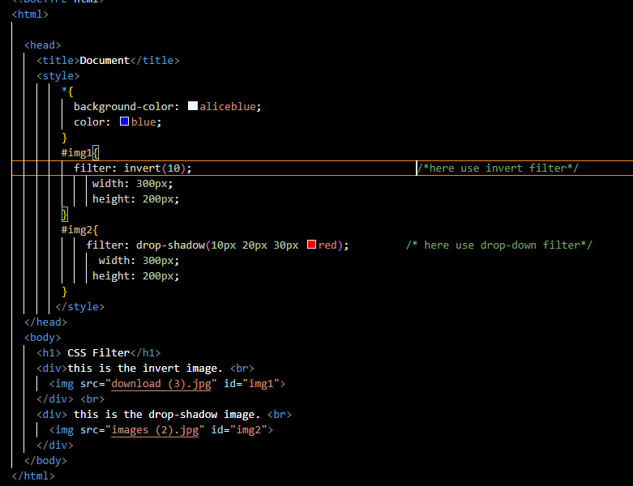
Output:-
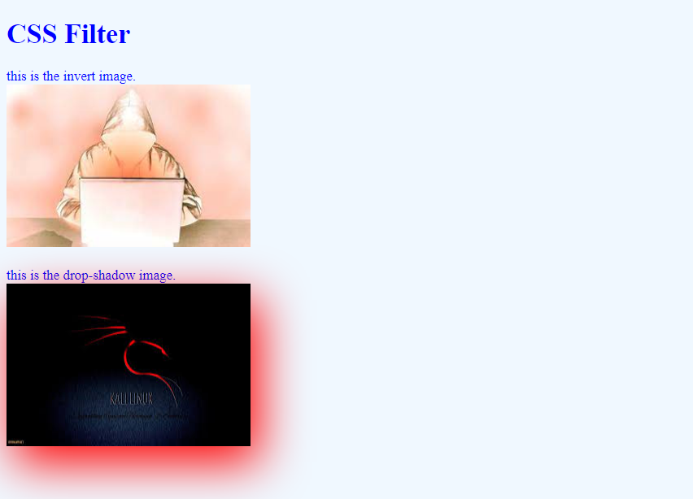
you can take some other filter like:-
- filter:brightness(70%)
- filter:saturate(40px)
- filter:blur(2px)
- filter:hue-rotate(240deg)
- filter:contrast(50%)
- filter:opacity(40%)
- filter:grayscale(80%)
- filter:sepia(90%)